Smart Manufacturing & Supply Chain
Help AkzoNobel become a leading paints and coatings company in the adoption of Industry 4.0 technologies, in a sustainable and economical way. We are looking for any solutions out there that improve manufacturing and logistics processes through smart methods.How can your solution help AkzoNobel create and adopt smarter manufacturing and supply chain solutions?
Deadline July 20th
Circular Solutions
Together with AkzoNobel, we are looking for solutions that contribute to the circularity of materials without increasing other environmental impacts. What can you see in AkzoNobel’s value chain that they cannot? Will your solution help them offer competitive and more sustainable solutions to their customers? How would your solution enable circular use of materials at any point in AkzoNobel’s value chain?
Deadline July 20th
Smart Application
Together with AkzoNobel, we are looking to find new ways to apply paints and coatings for better and more consistent results with less waste, time, and effort that will put customers’ minds at ease. We want to find application methods that are reliable in their repeatability, even when coating large surfaces. How could your solution change or improve the way paints and coatings are applied?
Deadline July 20th
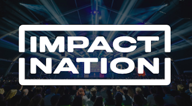
SUSTAINABLE SCENTS FOR CANDLES
Kapimex participates in Impact Nation with their brand Gusta. They want to focus on developing sustainable scented candles. The challenge here lies mainly in finding sustainable scents (which can then also be used in their interior perfumes) and the combination of ingredients. Their challenge: “How can we make the most sustainable scented candles for the masses? We mainly focus on sustainable scents.”
Deadline May 17th
SMART PARKING
Together with AmperaPark we’re seeking innovative solutions for smart payment and reservation. AmperaPark modifies gray parking lots into green energy sources. They are a niche hardware player in the field of electric charging. The big idea behind AmperaPark is that they will become a “smart charging system”. This means that energy is used in a more balanced way than today, all based on the needs of the car owner. Their challenge: “How can we develop a payment and reservation app that offers security and commitment for the end user of the smart parking space?
Deadline May 17th
SUPPLIER SUSTAINABILITY ASSESSMENT
Together with HelloPrint we are seeking solutions to assess printing companies and carriers in a smart, data-driven manner. HelloPrint wants to enable clients to make their best decision by assessing price, delivery time, and sustainability. Their challenge: “How might we assess the sustainability of the suppliers & carriers on our platform, and include it in our offer comparison, so that our customers can make an optimal choice?” We’re looking for solutions that can effectively assess 200+ suppliers on sustainability.
Deadline May 17th
EMPLOYEE ENGAGEMENT FOR SUSTAINABLE BEHAVIOUR
The Digital Workplace & Digital Employee team of ABN AMRO has the ambition to reduce the carbon footprint of its employees, and is seeking ways to engage and activate co-workers to reduce their data use. ABN AMRO wants its employees to be aware of and minimise their data footprint. Their challenge: “How might we make our co-workers aware of (unnecessary) data creation & storage, activate them to efficiently deal with data, such that the CO2 footprint of our data usage and storage is reduced, in light of our sustainability ambitions?” We are looking for solutions that can engage employees to take action and adapt sustainable behaviour in a fun, activating manner.
Deadline May 17th
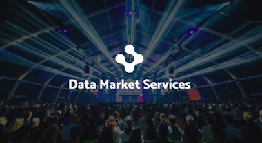
DATA MARKET SERVICES ACCELERATOR
In partnership with the European Commission, we’re looking to support data-centric startups in developing their skills, connecting with partners and investors and gaining media exposure. Would your startup benefit from access to data-science experts and entry to accelerators and incubators across Europe?
CIRCULAR SYSTEMS
Together with ABN AMRO and Impact Nation, we’re looking for new ways to bring circularity into the journey of commonly used materials and (former) waste products. The three areas of opportunity include packaging, plastics, and food waste. Does your company have an idea for reducing inefficiencies in these areas through new processes or material technologies?
CLIMATE PROTECTION
In partnership with ABN AMRO and Impact Nation, we’re seeking solutions to protect our climate by keeping our carbon budget in check. There are two areas where we can make an immediate impact: green buildings and industrial emissions. Do you have a technology to improve building operational efficiencies or reduce manufacturing emissions?
SOCIAL INCLUSION
Together with ABN AMRO and Impact Nation, we’re looking for new ways to promote people’s wellbeing in our rapidly changing world of work. The two areas of opportunity are our work future, and inclusion, and accessibility. Can your company facilitate remote workers in maximizing their potential, or increase social inclusion for those with unique needs?
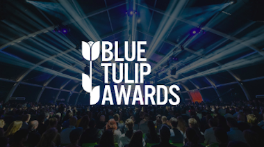
Food & water, education & employment
Together with the Blue Tulip Awards program, we’re looking for innovations that have the potential to change the future of the themes – Food & Water and Education & Employment. Register now to take one of the 50 spots in the 3-month competition. Through different rounds, you will receive valuable expert jury feedback, meet fellow innovators, media, investors, and a broad network of partners, to perhaps win the theme’s Blue Tulip Award. Sign up now!
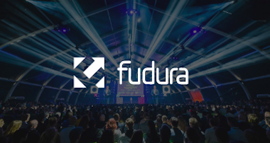
Optimizing energy usage
Together with Fudura, we’re looking for solutions that utilize their clients’ energy data to help them optimize the use of existing physical energy infrastructure. Does your company have the technology to allow Fudura’s clients to be more flexible, cost efficient, and less dependent on grid capacity for their energy needs?
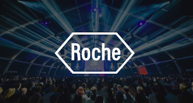
Market Intelligence
Together with Roche Global Procurement, we’re looking for technical solutions in the area of real-time market, category, and supplier insights and analytics. Can your company contribute to building a next-generation procurement organization?
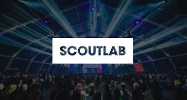
Procurement technology
Together with Roche Global Procurement, we’re looking for technical solutions in the general area of procurement technology. Can your company contribute to building a next-generation procurement organization?
Procurement portfolio management
Together with Roche Global Procurement, we’re looking for technical solutions in the general area of procurement technology. Can your company contribute to building a next-generation procurement organization?
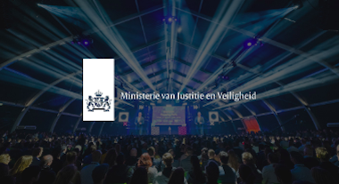
Visualizing relationships between entities
Together with the Dutch Ministry of Justice and Security, we’re looking for solutions to use the data collected about the relationships between regulated authorities and legal entities, to develop a data visualization, presentation, and/or ordering solution. Does your company have an updated approach to replace Network Drawings?
Crime scene efficiencies
Together with the Dutch Ministry of Justice and Security, we’re looking for technical solutions to assign crime scenes to nearby investigators, streamline officer communications, and collect evidence. Does your company have an idea for innovation in the processing of crime scenes?
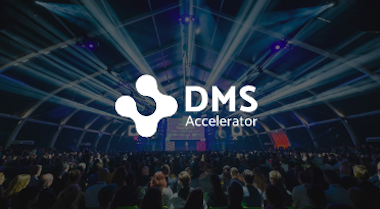
DMS ACCELERATOR 2020
Our mission is to boost the market success of data centric young businesses in Europe. To achieve that, we help startups, small and medium sized companies with a strong data focus in the “going to market phase”. How? We offer free data market services: mentoring, training, and a strong and friendly network ready to share knowledge and opportunities in topics like fundraising, promotion, data skills, legal and standardisation.
Deadline 2020: May 31
PHISHING PREVENTION
Together with the Dutch Ministry of Justice and Security, we’re looking for technical solutions to defeat phishing attacks before they impact individuals and businesses. Does your company have a creative and effective approach to preventing people from falling victim to this pervasive form of online crime?
Deadline: June 10
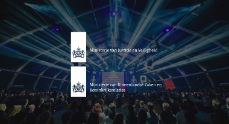
FUTURE WORK SPACE
Together with the Dutch Ministry of Justice and Security, and the Ministry of Interior Affairs and Kingdom Relations we’re looking for solutions that drive the future of collaborative work spaces. Does your company offer an innovative technology or unique concept that can take an ordinary lunch space, and turn it into a circular and interactive coworking hub?
Deadline: June 10
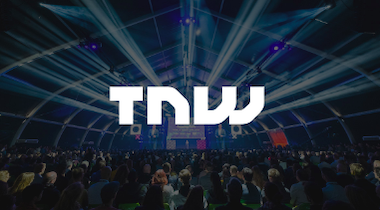
TNW2020 STARTUP PROGRAM
TNW Conference returns to Amsterdam in 2020. The next edition of the TNW Startup Program will have exciting new features tailored specifically to the needs of your startup. Gain exclusive access to matchmaking, curated meetings with investors, network at our sides events, plus much more. We want to make sure you have every opportunity to make lasting connections with your customers and potential partners to scale-up your startup.
Deadline:June 15
Conference days: October 1 & 2
Conference days: October 1 & 2
RESIDUAL WASTE REUSE
Together with ReintenInfra B.V., we’re looking for a platform or marketplace that facilitates the re-use of construction materials across the civil infrastructure industry. ReintenInfra B.V. wants to not only improve its own sustainability, but also inspire the industry as a whole to think of alternatives to the single use of materials. That’s why they have joined our Impact Nation program, an initiative to help businesses accelerate their sustainability strategies.
Deadline: May 11
SUSTAINABLE MATERIALS
We're working with Vogel's to help decrease their carbon footprint without compromising the quality of their consumer electronics products. In order to reach their goal of climate neutrality, Vogel's has joined our Impact Nation program, an initiative helps businesses accelerate their sustainability strategies.
Deadline: May 11
SUSTAINABLE PACKAGING
Together with Vrijdag Premium Printing (VPP) we’re looking for distinctive and sustainable/circular packaging solutions with a focus on paper and cardbox. VPP offers printing services for the B2B industry, and creates eye-catching labels and packaging which emphasizes the look and feel of different brands. They joined Impact Nation to make their packages more eco-friendly.
Deadline: May 11
CO2-NEUTRAL ACCREDITATION SYSTEM
Together with Johan Cruijff ArenA, we’re looking for a CO2 footprint accreditation system that reduces the overall carbon footprint of international events. Johan Cruijff Arena strives to be the most sustainable and innovative stadium in the world. The organization encourages their visitors, artists and staff, production, and partners to go greener as well. For this reason, they’ve joined our Impact Nation program, an initiative that helps businesses to accelerate their sustainability strategies.
Deadline: May 11
ASSESSMENT FOR GREEN SPACES
Together with Wereldhave, we’re looking for a partner that can help them digitally assess the opportunities for green space development on (or around) their Full Service Centers (aka. one-stop spaces designed for people to shop, work and relax). Wereldhave focuses on bringing comfort to people with busy urban lifestyles, and that’s why they also focus on creating healthy spaces that are good for the environment and the local communities where they are located. That’s why they’ve joined our Impact Nation program: an initiative that helps businesses accelerate their sustainability strategies.
Deadline: May 11
DECREASE ENERGY CONSUMPTION
Together with Centralpoint, we’re looking for ways to support their clients in reducing energy consumption. Centralpoint is looking forward to delivering more flexible IT services that significantly improve data storage and increase sustainability. That’s why they’ve joined our Impact Nation program: an initiative that helps businesses accelerate their sustainability strategies.
Deadline: May 11
HEMP-BASED APPAREL
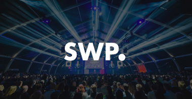
FUTURE OF HEALTHY WORK
Together with Smart WorkPlace, Menzis, SAS, Strukton Worksphere, Royal HaskoningDHV, and TOPDesk, we're putting in the spotlight innovative solutions shaping the future of healthy workplace environments. This is a great opportunity for startups focusing on themes like wellbeing, ergonomics, sports, mobility, food, procurement, diversity, inclusion and social enterprise.
Deadline: May 01
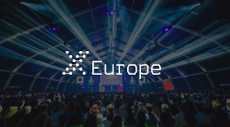
X-EUROPE HEALTH TECH
This program is for deeptech European startups innovating the fields of health, agriculture, AI/ML, space, green tech, and cybersecurity. For the next 2 years, we will be sharing open applications for each field. We connect your startup with investors, corporations and governments to facilitate the shared development of the European deeptech startup ecosystem. Over the five-month programme, you will have a chance to join a community of 25 leading European startups in your field. You will receive online and in-person training, 1-on-1 mentorship meetings, as well as incubation and acceleration services.
Deadline: April 30
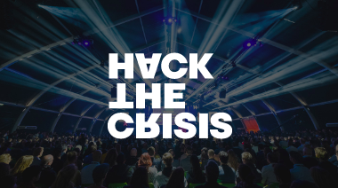
HACK THE CRISIS NL
After mentoring teams developing solutions to tackle the COVID-19 outbreak in Estonia, Sebastien Toupy, Head of Startup Relations at TNW, decided to bring the gone-global Hack the Crisis Innovation Marathon to the Netherlands. Half of the NL team was a volunteer employee from TNW, and Boris Veldhuijzen van Zanten - our founder and CEO - was one of the jury members. We had a great time working with the Dutch ecosystem for an urgent and good cause: help creating solutions for these trying times. For more information visit the hackaton website.
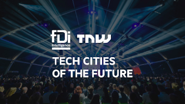
TECH CITIES OF THE FUTURE
Are you a Startup? Help showcase the success of your home city. TNW and fDi by the Financial Times are ranking European cities on the strength of their startup ecosystems. Submit info about your startup and you will be entered to win a ticket to TNW2020, our flagship tech event in Amsterdam.
Deadline: April 20
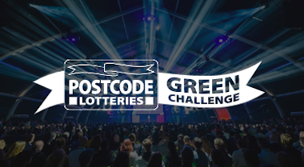
PL GREEN CHALLENGE
Tell us about the positive impact that you and your team could have on the environment with extra money and support—you could win up to €500,000.
Deadline: April 01
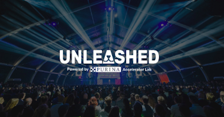
UNLEASHED: PET CARE INNOVATION
Nestlé Purina Petcare and TNW have teamed up to launch Unleashed, a program to support innovation in the pet care industry. We’re looking for new digital and technical solutions creating richer lives for pets and their parents. Selected start-ups will have the support of a team of experts to help them prove the concept of their business, which can lead to additional collaborations or investments from Purina.
Deadline: March 31
SAFEGUARDING CHILDREN ONLINE
They are looking for startup solutions that help to educate children. Children are inherently vulnerable, especially in the online world. How can we use modern education methods to help children become resilient and able to use the internet safely and freely? If your solution has the answer, apply now for the chance to join the challenge.
Deadline: March 22
DIGITAL ID FOR OFFICERS
The Integrity and Screening department is looking for digital identity and verification tools for special officers to prevent privacy issues. Currently, special investigating officers only have a physical card they need to verify their status. This method is too sensitive to fraud. If your digital solution can be used to ensure identification to third parties is secure, and can help officers perform their duties efficiently, apply now for the chance to join the challenge.
Deadline: March 22
STREET ROBBERY PREVENTION
The department of High Impact Crimes is looking for innovative hardware- based solutions to help prevent street robbery in the Netherlands. Potential solutions should operate in public areas, for example smart camera solutions. If your solution can be used to prevent street crime through influencing the behaviour of potential victims and/or perpetrators, apply now for the chance to join the challenge.
Deadline: March 22
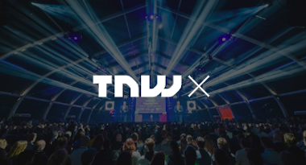
BATTERY AND POWER MANAGEMENT
The current li-ion battery technology used in portable electronics is reaching its performance limits. Our next power sources need to be safer, have better thermal stability, shorter charging periods and be better for the planet. Are you making this happen? Or can you help with alternative charging methods (i.e. kinetic, wireless and solar)? Get in touch, we want to hear about your power management solutions for portable electronic devices.
THE CIRCULAR ECONOMY
We are looking for new and sustainable materials that offer an alternative to plastic or metal in handheld consumer electronic devices. We’re hunting for recycling and up-cycling solutions to help reduce their environmental impact, with a specific focus on contaminated waste. Are you working on a sustainable and novel material f or handheld electronic devices? Or, are you powering the logistics that make the circular economy operate? Please get in touch, we want to hear about your sustainable solutions.
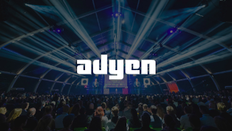
TECH5 2020
Tech5 showcases the hottest young scale-ups in 20 European countries based on their performance, growth, and potential. Criteria include notable investment rounds, team growth, media coverage, and social impact. The top five scale-ups from each country will be invited for annual TNW Founders Day and TNW Conference. You’ll have the opportunity to network with top-tier investors, influencers, global press, and the global tech community.
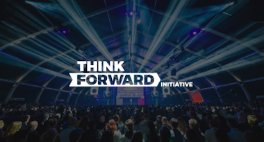
THINK FORWARD INITIATIVE
The Think Forward Initiative (TFI) supports startups and scale-ups to develop new solutions that help people make better choices. We are inviting startups to join us on a 5-month accelerator program, delivered through one day per month sessions of intensive personal support from leading experts and services. Across the programme, TFI works with your startup to help you achieve objectives, structure your business, and crack the formula to scale internationally.
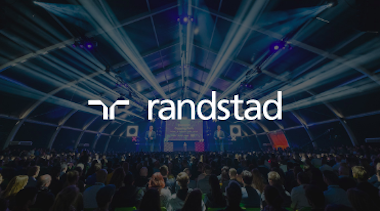
DEALS OVER DINNER
Deals Over Dinner will bring together corporate HR departments and HR tech startups to dine and talk about the future of talent recruitment and HR management. If you’re a fast growing tech company focused on building HR-tech solutions with a clear proposition for large companies, this is your opportunity to showcase your solution in front of the most innovative European corporations.
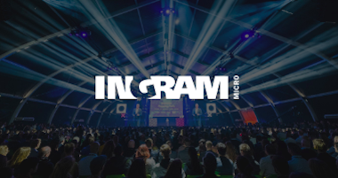
COMET COMPETITION
The Comet Competition is designed to give new companies the financial jump-start they need to get new technologies off the ground. This is the only challenge dedicated to discovering talented B2B independent software vendors and funding their trajectory to channel market success. With the opportunity for companies to compete for over $5M in go-to market funds and cush, the Comet Challenge aims to accelerate the success of the most promising startups.
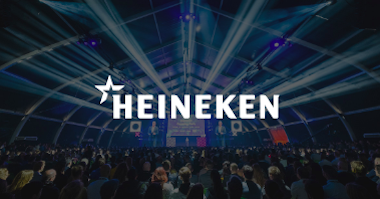
HEINEKEN HR BREWHOUSE
We are looking for tech solutions to improve the recruitment process for both our candidates and global HR teams. This includes processes like sourcing talent using AI to ensuring employee referrals are more efficient. Whether this be with new interview methods, or a new way of managing the employee life cycle, we want to hear your solutions to improving the recruitment process for HEINEKEN.
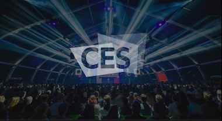
CES UNVEILED
CES Unveiled returns to the Netherlands for a third edition to showcase the latest technology from around the region. Hosted at international technology hotspots , CES Unveiled features innovative technology companies of all sizes, the world’s most influential media, senior-level executives, and prominent tech industry influencers. CES Unveiled is the ultimate sneak peak of what new technology will be launched to the world in 2020.
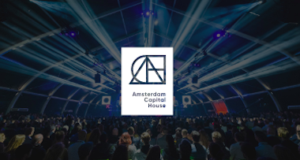
AMSTERDAM CAPITAL WEEK
We’ll be hosting a special Pitch Battle to emphasize the value of social capital for startups. During Amsterdam Capital House, six startup founders will have the opportunity to pitch to a crowd and jury of top ecosystem players - from accelerators to angel, VC, and corporate investors. After the pitches, we’ll announce the winner and celebrate with networking and drinks.